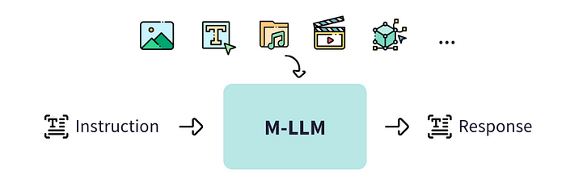
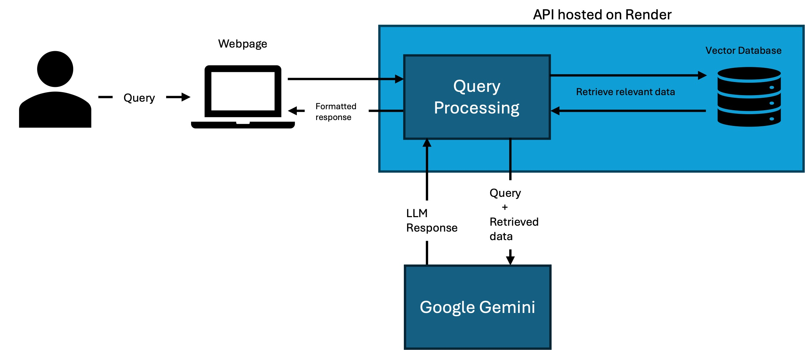
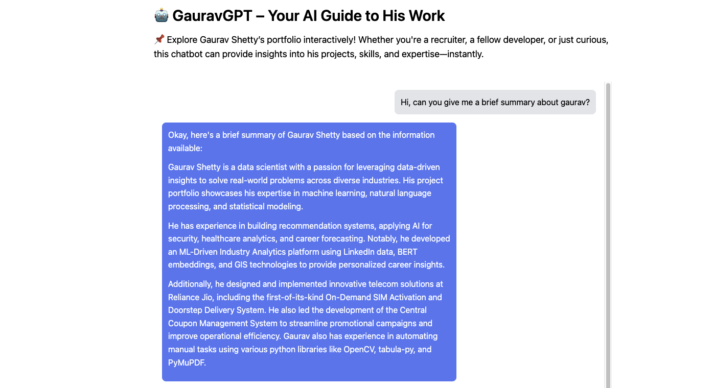

Intelligent Portfolio Chatbot: AI-Powered Interactive Resume
This project is an AI-powered chatbot integrated into my portfolio website, designed to provide visitors with an interactive way to learn about my experiences, skills, and projects. Unlike a static resume, this chatbot leverages Retrieval-Augmented Generation (RAG) with an LLM model to answer questions dynamically based on structured information from my portfolio and additional documents. The goal is to enhance engagement and make my portfolio more informative and interactive.
Objective
The primary objective of this project is to create a seamless and intelligent interface that allows recruiters, collaborators, and visitors to explore my professional background through natural language interactions. Instead of navigating through multiple pages, users can simply ask questions about my projects, skills, or experiences and receive accurate, well-structured responses.
Methodology
The chatbot was built by first creating a structured document containing comprehensive details about my projects, experiences, publications, and other professional work. This document served as the primary knowledge base. Using Python, I preprocessed the data by segmenting it into meaningful textual chunks to ensure efficient retrieval. These chunks were then converted into vector embeddings using all-MiniLM-L6-v2, allowing semantic similarity searches. To store and index these embeddings efficiently, I implemented FAISS (Facebook AI Similarity Search), enabling fast and scalable nearest-neighbor searches for retrieving relevant content based on user queries.
For response generation, I integrated Gemini-2.0-Flash, a lightweight and efficient LLM model, to generate accurate answers. The core retrieval workflow involves taking a user query, using FAISS to fetch the most relevant information from the indexed database, and then passing both the query and retrieved data to the LLM for response generation. To make this accessible, I built a FastAPI backend, exposing this functionality as an API, which was then deployed on Render. The frontend, designed using HTML, CSS, and JavaScript, serves as an intuitive user interface where users can input their queries, interact with the chatbot, and view dynamically generated responses.
Tools & Technologies
- Used Python for preprocessing and segmenting textual data into meaningful chunks.
- Converted text chunks into embeddings using all-MiniLM-L6-v2 for semantic similarity search.
- Implemented FAISS (Facebook AI Similarity Search) for indexing and retrieving relevant information efficiently.
- Integrated Gemini-2.0-Flash as the LLM for generating responses based on user queries.
- Developed a FastAPI backend to expose the chatbot functionality as an API and deployed it in Renfer for cloud-based accessibility
- Designed an interactive frontend using HTML, CSS, and JavaScript for user interaction.
Outcome
The chatbot significantly enhances user experience by providing a conversational and engaging way to explore my work. It allows visitors to receive tailored responses without manually searching through different sections of the portfolio. This project not only improves accessibility but also serves as a demonstration of my expertise in AI, NLP, and chatbot development. It stands as a practical example of how AI can be leveraged to make personal branding more interactive and insightful.
